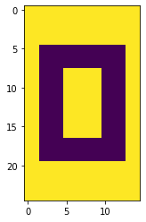

Singular Value Decomposition in Python
Example: Compression
Near the bottom of the writeup in the AMA, they demonstrate how useful SVD is a way of compressing/uncompressing data.
This will make a good working example as any.
They assemble a 25 X 15 matrix of zeros and ones that form an image of a 0. Per the example, there are really only different types of columns that go into constructing the bigger picture– and thus some obvious information redundancy that we can leverage.
%pylab inlinePopulating the interactive namespace from numpy and matplotlib
a = np.ones((25, 1))b = np.vstack([np.ones((5, 1)),
np.zeros((15, 1)),
np.ones((5, 1))])c = np.vstack([np.ones((5, 1)),
np.zeros((3, 1)),
np.ones((9, 1)),
np.zeros((3, 1)),
np.ones((5, 1))])zero = np.c_[a, a, b, b, b, c, c, c, c, c, b, b, b, a, a]
zero.shape(25, 15)
Altogether, our data looks like
plt.imshow(zero);
In Python
To perform SVD in Python, we can turn to the numpy implementation
import numpy.linalg as LAThe svd() function returns all three components of the righthand side of our SVD form A = U SIGMA V.T.
Note: The vh term is intentional as it is the conjugate transpose of our matrix V
u, s, vh = LA.svd(zero)Inspecting, the shapes of u and vh are square and correspond to the column and row spaces, respectively.
u.shape, s.shape, vh.shape((25, 25), (15,), (15, 15))
Looking at s, however, it’s obvious that we’re carrying more information than we need.
It only needed 3 singular values to reassemble the information stored in our eigen basis matricies– the rest was simply zero and will be ignored.
np.set_printoptions(precision=3, suppress=True)
sarray([14.724, 5.217, 3.314, 0. , 0. , 0. , 0. , 0. ,
0. , 0. , 0. , 0. , 0. , 0. , 0. ])
And so we can omit the rows/columns of our matricies accordingly.
U = u[:, :3]
S = s[:3]
V = vh[:3, :]U.shape, S.shape, V.shape((25, 3), (3,), (3, 15))
Finally, reassembling our original matrix using simply vectors and scalars, we have.
plt.imshow(np.dot(U * S, V));
It’s worth calling out that our original representation had a number of values equal to:
zero.shape[0] * zero.shape[1]375
But after paring down to just the columns, singular values, and rows that matter, we have
(U.shape[0] * U.shape[1]) + S.shape[0] + (V.shape[0] * V.shape[1])123
Less than a third.